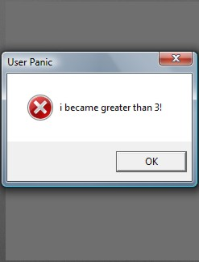

This example application uses the debug logging and user panic functions in MoSync. Note: The purpose is to stress the system, and create an error. There is no output to screen.

This example is included in the MoSync SDK installation in the /examples folder. For information on importing the examples into your workspace, see Importing the Examples.
When started, a pop up with the message “i is greater than 3” should appear.
None of the keys should be operable, just click OK on the popup to close it.